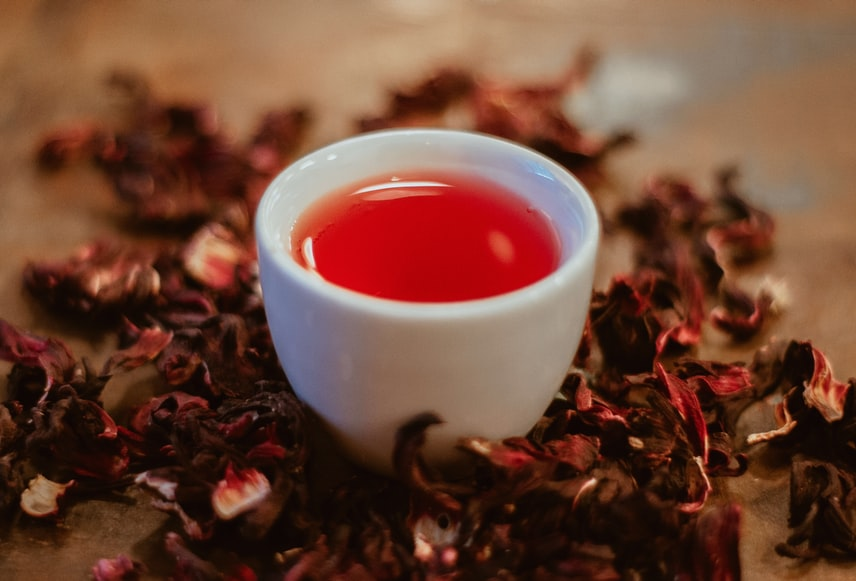

Herbata Czerwona

Czerwona herbata ma wiele właściwości. Przede wszystkim eliminuje wolne rodniki, a co za tym idzie, redukuje skutki stresu oksydacyjnego. Może więc opóźniać starzenie się komórek w ciele i pomóc zachować na dłużej młody wygląd skóry. Ponadto ma właściwości antyutleniające i antynowotworowe. Czerwona herbata może wspomagać utratę masy ciała, ale obniża również cholesterol. Jest napojem pobudzającym pamięć i zdolności poznawcze, ponieważ zawiera kofeinę. Oprócz tego działa normalizująco na ciśnienie krwi, przeciwzapalnie, a nawet chroni przed próchnicą. Warto ją pić w czasie grypy lub przeziębienia, ponieważ szybciej wyeliminuje bakterie i wirusy z organizmu. Czerwona herbata jest też moczopędna, przez co można pozbyć się nadmiaru wody z organizmu i pobudzić układ moczowy do działania.